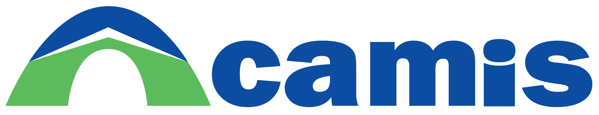
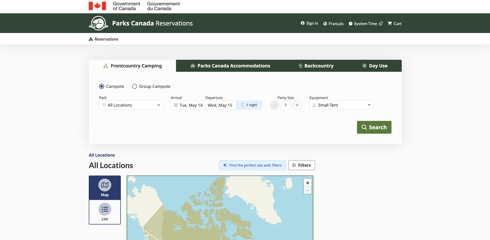
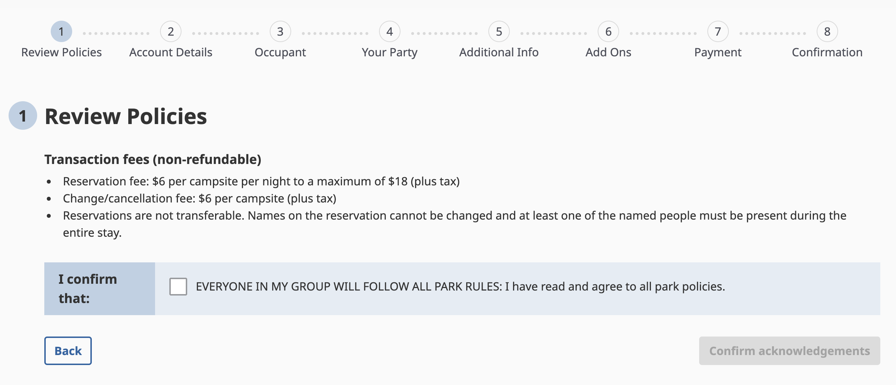
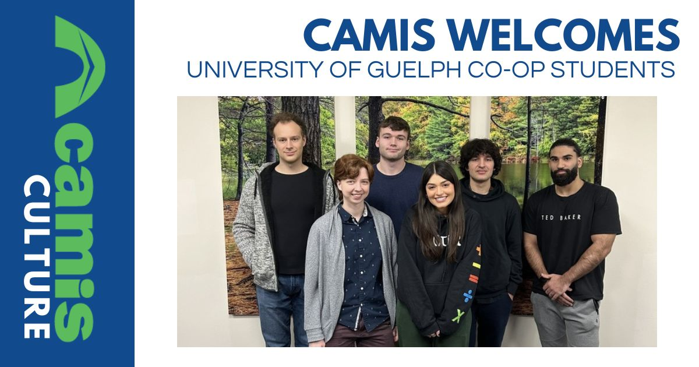

Camis Work Term Report S-24
Introduction
This is my fourth and final work-term report for my program at the University of Guelph. This term was my second term at Camis as a software developer. My last work-term report can be accessed by this link: W-24 Camis Work Term Report. In the future I plan to compile a homepage to link together all of my work term reports. To navigate my report you can use the nav bar on the left to scroll to the appropriate section.
About Camis
Camis is a park management and campsite reservation company that offers a customizable solution for government parks that for over 40 years has met the needs of hundreds of customers spanning from Canada to the United States.
About My Job
To get a more detailed account of my role at Camis, the main solutions they offer and what I worked on during my last term see my previous work-term report: W-24 Camis Work Term Report. In brief, Camis has a campsite reservation website called Prime and an application for call centers to make reservations and customize Prime(business rules, content, styles, etc) to the clients needs called Spirit. During my second term at Camis I still ended up working mostly working on the frontend on Prime using Angular. I worked on fixing a lot of bugs. For instance users not being able to proceed past certain pages, page responsiveness issues, or failing race conditions. I also worked on improving our UX/UI. For example I worked on improving our booking category navigation (used for searching for different types of products) experience for mobile. Before users had to click on pagination buttons to view overflowing booking categories. It looked like this for desktop (I don't have a screenshot for mobile):
In this ticket I made the navigation scrollable, improved its styling, and changed the icons from images to font awesome icons that could be customized from content management. Below is a video of the improved booking category naviation experience for mobile:
Another example of a ticket I worked on is adding a back button to all of our booking work flows that works with the stepper component to return the user to the correct page.
During the majority of the second half of my work term our team was tasked with ensuring that Prime was certified for passed all of the Web Content Accessibility Guidelines(WCAG). An external organization reviewed and created tickets for everything they believed violated these guidelines. This ended up taking up about half of our teams capacity for sprints. I'll talk further about this struggle for our team in my report focus. Furthermore, our team was trying to switch from Test Cafe to Playwright to improve our integration testing performance which also took some commitment each sprint. Another initiative our team starting working on towards the end was improving our online store. Prime was mainly built for the purpose of campground reservation so our store experience for purchasing products had a lot to be improved.
Goals and Learning Outcomes
For my second term at Camis I made 3 learning goals I believed would make me a better software developer in the future and would help enhance my abilities in areas that I was missing from University. The 3 goals were to:
- Improve my leadership skills
- Improve my presentation and oral communication skills
- Improve my teamwork skills
Goal #1
During my co-op work term, I wanted to improve my leadership skills by sharing my opinion more in meetings, actively participating in solving problems that came up during sprint planning and by fixing bugs our team faces. Since this is my second term at my current co-op, I had a much better understanding of our organization and I believed I hand the ability to start becoming a leader on our team.
To be a better leader I more freely gave my opinon on issues our team faced, especially during our teams retro. For instance, a big issues our team faced in an influx of tickets from an outside company for accessibility. I explained what I believed to be the best solution to this problem. To create our own tickets for each workflows accessibility rather than try and resolve the hundereds of tickets created by the outside company. However, I still didn't have as much knowledge as other more experienced members in terms of solutions for tickets during backlog refinement so I didn't provide much leadership in those meetings.
By the end of the work-term, I took a step forward in improving my leadership skills. I more freely gave my opinion on issues our team faced, especially during retro.
Goal #2
My second goal during the work term was to improve my presentation and oral communication skills. This goal was important to me since I have trouble explaining complicated issues and presenting in front of other people well. I have trouble in this area due to not being able to effectively organize my thoughts before speaking.
To achieve this goal I planned on taking bullet point notes before presenting ideas to my team in meetings and before our bi-weekly sprint review meeting where we show off the tickets we worked on to higher-ups in the company. However, in practice I didn't end up doing this. When I had issues I found it much easier to ask for help 1 on 1 and show rather than tell what problems I was facing. In addition, I found it worked better for me to express my issues and post them in squad chat rather than verbally since this allowed me to get my thoughts in order and be more comprehensible. On the other hand, during sprint review meetings my presentation skills didn't notable improve since the presentations were very straightforward without much engagement from the audience. Rather than a demo of the feature we worked on, it ended up being more of a check to make sure we did the ticket correctly. The presentaion was just to show that the ticket met the acceptance criteria.
Thus, by the end of the workterm my communication and presentation skills didn't improve much. However, I found better methods of getting help when I was stuck by opting to meet 1 on 1 with teammates more experienced in an issue I was facing, or by writing out my problem in the chat which allowed me to get me thoughts in order, and explain myself clearly and concisely.
Goal #3
The final goal I wanted to achieve this work term was to improve my teamwork skills at working with other developers to complete tickets. Naturally, I like to work alone in general. This has been the case for most of my education as well. And during my program in Computer Science at University of Guelph most assignments and assessments are entirely individual. Even during the software group project course even though we worked as a group to achieve a goal I mostly worked alone on my individual parts to achieve that goal.
I ended up doing a pretty good job of completing this goal. By the end of the term, I worked with the majority of members on my team on different types of tickets. I reached out to teammates I believed had expertise in an area when I was stuck and for confirmation on the work I had done. Nevertheless, I could have done better reaching out sooner for help and there were a couple teammates that I didn't work closely with during my time at Camis.
By the end of the work-term by working with most of my teammates I become a better team player and as a result our teams velocity increased.
Report Focus
Preface
For the focus of my report, the topic I am going to write about the main issues and challenges our team faced this term and how I believe that we could solve them. I will finish off with some key takeaways I believe could help on work teams I'm on in the future.
Prime Accessibility Audit
One of the main challenges our team faced was making Prime accessible to pass the upcoming accessibility audit. The issue was that an external organization created hundereds of tickets to fix — many of which were very minor — and they were completely unorganized. While I was there we ended up trying to fill up half of our sprint with these tickets which took up most of ours teams capacity and still wouldn't allow for us to meet the deadline for the audit.
I believe a better solution would be for higher ups at Camis to have discussed beforehand this issue with our team before getting an external company to create all these tickets and perform the audit. Since we then would have been able to solve this situation much more efficiently. A member on our team had previous experience at another company where they had a much better orgainzation help them pass the accessibility audit and fix the critical issues. Alternatively, I believed it would be much better for us to create our own tickets for fixing any accessibility issues in every major workflow and use case for our website. Since, this way it would be much easier to seed out critical issues and it would be a much more organized approach then the hundereds of tickets from the external organization. Either way, our team should have been more involved in deciding the approach to completing the audit and its deadline so that we could complete the work without it taking up our entire sprints.
My takeaway from this experience is that before higher-ups make decisions for large epics of work there should be a meeting with the team involved. Since our team has more expertise in this area we can offer useful feedback to complete tasks more efficiently.
Sprint Reviews
Sprint Review is a meeting that occurs every 2 weeks that was added sometime after I joined Camis where we verified to higher-ups and people from other squads that our tickets met the acceptance criteria. I found this meeting to be a waste of time. Moreover, This goes against the integrity of the developer since we already check that each ticket meets the acceptance criteria. Furthermore, the QA team tests and verifies this as well. In the meetings, there was rarely any feedback and it felt like there was no value to most of the people there. Since we were just going over the acceptance criteria for individual tickets there was no connectedness and the bulk of people in the meeting probably had no idea what was going on and weren't paying attention.
Instead what would have been more useful would be to have a monthly demo where each teams presents the features that they worked on for the last month. This way everyone in the company could have an idea of what each team is working on and it would be useful and exciting to the rest of the company. A demo would be much easier to follow and there would be enough bulk of work accomplished to show entire big features finished.
My takeaway from this experience is that every meeting should serve a purpose or be engaging to the audience. Furthermore, rather than having to follow along with higher-ups agendas, teams should be more agile and have more of a say in their sprint schedule.
Conclusion
To conclude, during my second term at Camis I became more of a contributor on the team and started to voice my opinions more openly. I became a better teammate and took steps towards becoming a better leader. Again I mostly worked on the front-end on Prime using Angular and was much more efficient at finishing tickets. I worked on larger front-end features and fixed bugs more efficiently. During the second half of my term, our teams faced some challenges which I believed could have handled better. We were tasked with passing an accessibility audit and higher-ups made questionable decisions without our teams opinions that caused us to be inefficient in achieving this goal. I believe this could have been solved from giving our team more of a voice in how we approached the challenge at hand. Additionally, our bi-weekly sprint review meeting didn't work well for the organization and I believed it could be an effective meeting by making it into a monthly demo for teams to showcase their work. Overall, despite the challenges, I had a great time working at Camis during my second term and working with the other developers on the web squad team!
Acknowledgements
Thank you to everyone on the web-squad team! Everyone was very friendly and were always available to help me out when I was stuck and were happy to answer any questions I had. I felt like a proper member on the team and had the freedom to voice any thoughts that I had. Also it was good to get to know some of the other co-op students and discuss our experiences on different teams. We had some fun events in the second half of our term such as the Camis Olympics where me and 3 other co-ops won a gold at building a tent the fastest.
A picture of me and the other co-ops at Camis:
Sources
- “Reservation and Park Management Solutions.” Camis, Camis, www.camis.com/reservation-and-park-management-solutions. Accessed 15 May 2024.